class TPrincipal: public TNamed
>
Principal Components Analysis (PCA)
The current implementation is based on the LINTRA package from CERNLIB by R. Brun, H. Hansroul, and J. Kubler. The class has been implemented by Christian Holm Christensen in August 2000.
Introduction
In many applications of various fields of research, the treatment of large amounts of data requires powerful techniques capable of rapid data reduction and analysis. Usually, the quantities most conveniently measured by the experimentalist, are not necessarily the most significant for classification and analysis of the data. It is then useful to have a way of selecting an optimal set of variables necessary for the recognition process and reducing the dimensionality of the problem, resulting in an easier classification procedure.
This paper describes the implementation of one such method of feature selection, namely the principal components analysis. This multidimensional technique is well known in the field of pattern recognition and and its use in Particle Physics has been documented elsewhere (cf. H. Wind, Function Parameterization, CERN 72-21).
Overview
Suppose we have prototypes which are trajectories of particles,
passing through a spectrometer. If one measures the passage of the
particle at say 8 fixed planes, the trajectory is described by an
8-component vector:
in 8-dimensional pattern space.
One proceeds by generating a a representative tracks sample and
building up the covariance matrix 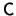. Its eigenvectors and
eigenvalues are computed by standard methods, and thus a new basis is
obtained for the original 8-dimensional space the expansion of the
prototypes,
allows the study of the behavior of the coefficients 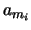 for all the tracks of the sample. The eigenvectors which are insignificant for the trajectory description in the expansion will have their corresponding coefficients close to zero for all the prototypes.
On one hand, a reduction of the dimensionality is then obtained by omitting these least significant vectors in the subsequent analysis.
On the other hand, in the analysis of real data, these least significant variables(?) can be used for the pattern recognition problem of extracting the valid combinations of coordinates describing a true trajectory from the set of all possible wrong combinations.
The program described here performs this principal components analysis on a sample of data provided by the user. It computes the covariance matrix, its eigenvalues ands corresponding eigenvectors and exhibits the behavior of the principal components (), thus providing to the user all the means of understanding his data.
Principal Components Method
Let's consider a sample of 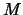 prototypes each being characterized by
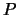 variables
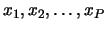. Each prototype is a point, or a
column vector, in a -dimensional pattern space.
| 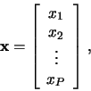 | (1) |
Those variables are the quantities accessible to the experimentalist, but are not necessarily the most significant for the classification purpose.
The Principal Components Method consists of applying a linear transformation to the original variables. This transformation is described by an orthogonal matrix and is equivalent to a rotation of the original pattern space into a new set of coordinate vectors, which hopefully provide easier feature identification and dimensionality reduction.
Let's define the covariance matrix:
This matrix is real, positive definite, symmetric, and will have all its eigenvalues greater then zero. It will now be show that among the family of all the complete orthonormal bases of the pattern space, the base formed by the eigenvectors of the covariance matrix and belonging to the largest eigenvalues, corresponds to the most significant features of the description of the original prototypes.
let the prototypes be expanded on into a set of 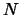 basis vectors
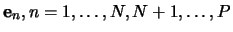,
The `best' feature coordinates 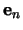, spanning a feature
space, will be obtained by minimizing the error due to this
truncated expansion, i.e.,
Multiplying (3) by
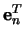 using (5),
we get
The minimization of the sum in (7) is obtained when each term 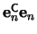 is minimum, since is positive definite. By the method of Lagrange multipliers, and the condition (5), we get
which shows that is an eigenvector of the covariance matrix with eigenvalue 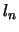. The estimated minimum error is then given by
where 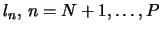 are the eigenvalues associated with the omitted eigenvectors in the expansion (3). Thus, by choosing the largest eigenvalues, and their associated eigenvectors, the error
The transformation matrix to go from the pattern space to the feature
space consists of the ordered eigenvectors
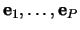 for its columns
August 2000, CERN
Function Members (Methods)
| TPrincipal() | |
| TPrincipal(Int_t nVariables, Option_t* opt = "ND") | |
| virtual | ~TPrincipal() |
| void | TObject::AbstractMethod(const char* method) const |
| virtual void | AddRow(const Double_t* x) |
| virtual void | TObject::AppendPad(Option_t* option = "") |
| virtual void | Browse(TBrowser* b) |
| static TClass* | Class() |
| virtual const char* | TObject::ClassName() const |
| virtual void | Clear(Option_t* option = "") |
| virtual TObject* | TNamed::Clone(const char* newname = "") const |
| virtual Int_t | TNamed::Compare(const TObject* obj) const |
| virtual void | TNamed::Copy(TObject& named) const |
| virtual void | TObject::Delete(Option_t* option = "")MENU |
| virtual Int_t | TObject::DistancetoPrimitive(Int_t px, Int_t py) |
| virtual void | TObject::Draw(Option_t* option = "") |
| virtual void | TObject::DrawClass() constMENU |
| virtual TObject* | TObject::DrawClone(Option_t* option = "") constMENU |
| virtual void | TObject::Dump() constMENU |
| virtual void | TObject::Error(const char* method, const char* msgfmt) const |
| virtual void | TObject::Execute(const char* method, const char* params, Int_t* error = 0) |
| virtual void | TObject::Execute(TMethod* method, TObjArray* params, Int_t* error = 0) |
| virtual void | TObject::ExecuteEvent(Int_t event, Int_t px, Int_t py) |
| virtual void | TObject::Fatal(const char* method, const char* msgfmt) const |
| virtual void | TNamed::FillBuffer(char*& buffer) |
| virtual TObject* | TObject::FindObject(const char* name) const |
| virtual TObject* | TObject::FindObject(const TObject* obj) const |
| const TMatrixD* | GetCovarianceMatrix() const |
| virtual Option_t* | TObject::GetDrawOption() const |
| static Long_t | TObject::GetDtorOnly() |
| const TVectorD* | GetEigenValues() const |
| const TMatrixD* | GetEigenVectors() const |
| TList* | GetHistograms() const |
| virtual const char* | TObject::GetIconName() const |
| const TVectorD* | GetMeanValues() const |
| virtual const char* | TNamed::GetName() const |
| virtual char* | TObject::GetObjectInfo(Int_t px, Int_t py) const |
| static Bool_t | TObject::GetObjectStat() |
| virtual Option_t* | TObject::GetOption() const |
| const Double_t* | GetRow(Int_t row) |
| const TVectorD* | GetSigmas() const |
| virtual const char* | TNamed::GetTitle() const |
| virtual UInt_t | TObject::GetUniqueID() const |
| const TVectorD* | GetUserData() const |
| virtual Bool_t | TObject::HandleTimer(TTimer* timer) |
| virtual ULong_t | TNamed::Hash() const |
| virtual void | TObject::Info(const char* method, const char* msgfmt) const |
| virtual Bool_t | TObject::InheritsFrom(const char* classname) const |
| virtual Bool_t | TObject::InheritsFrom(const TClass* cl) const |
| virtual void | TObject::Inspect() constMENU |
| void | TObject::InvertBit(UInt_t f) |
| virtual TClass* | IsA() const |
| virtual Bool_t | TObject::IsEqual(const TObject* obj) const |
| virtual Bool_t | IsFolder() const |
| Bool_t | TObject::IsOnHeap() const |
| virtual Bool_t | TNamed::IsSortable() const |
| Bool_t | TObject::IsZombie() const |
| virtual void | TNamed::ls(Option_t* option = "") const |
| virtual void | MakeCode(const char* filename = "pca", Option_t* option = "")MENU |
| virtual void | MakeHistograms(const char* name = "pca", Option_t* option = "epsdx")MENU |
| virtual void | MakeMethods(const char* classname = "PCA", Option_t* option = "")MENU |
| virtual void | MakePrincipals()MENU |
| void | TObject::MayNotUse(const char* method) const |
| virtual Bool_t | TObject::Notify() |
| void | TObject::Obsolete(const char* method, const char* asOfVers, const char* removedFromVers) const |
| static void | TObject::operator delete(void* ptr) |
| static void | TObject::operator delete(void* ptr, void* vp) |
| static void | TObject::operator delete[](void* ptr) |
| static void | TObject::operator delete[](void* ptr, void* vp) |
| void* | TObject::operator new(size_t sz) |
| void* | TObject::operator new(size_t sz, void* vp) |
| void* | TObject::operator new[](size_t sz) |
| void* | TObject::operator new[](size_t sz, void* vp) |
| virtual void | P2X(const Double_t* p, Double_t* x, Int_t nTest) |
| virtual void | TObject::Paint(Option_t* option = "") |
| virtual void | TObject::Pop() |
| virtual void | Print(Option_t* opt = "MSE") constMENU |
| virtual Int_t | TObject::Read(const char* name) |
| virtual void | TObject::RecursiveRemove(TObject* obj) |
| void | TObject::ResetBit(UInt_t f) |
| virtual void | TObject::SaveAs(const char* filename = "", Option_t* option = "") constMENU |
| virtual void | TObject::SavePrimitive(ostream& out, Option_t* option = "") |
| void | TObject::SetBit(UInt_t f) |
| void | TObject::SetBit(UInt_t f, Bool_t set) |
| virtual void | TObject::SetDrawOption(Option_t* option = "")MENU |
| static void | TObject::SetDtorOnly(void* obj) |
| virtual void | TNamed::SetName(const char* name)MENU |
| virtual void | TNamed::SetNameTitle(const char* name, const char* title) |
| static void | TObject::SetObjectStat(Bool_t stat) |
| virtual void | TNamed::SetTitle(const char* title = "")MENU |
| virtual void | TObject::SetUniqueID(UInt_t uid) |
| virtual void | ShowMembers(TMemberInspector& insp) |
| virtual Int_t | TNamed::Sizeof() const |
| virtual void | Streamer(TBuffer& b) |
| void | StreamerNVirtual(TBuffer& b) |
| virtual void | SumOfSquareResiduals(const Double_t* x, Double_t* s) |
| virtual void | TObject::SysError(const char* method, const char* msgfmt) const |
| void | Test(Option_t* option = "")MENU |
| Bool_t | TObject::TestBit(UInt_t f) const |
| Int_t | TObject::TestBits(UInt_t f) const |
| virtual void | TObject::UseCurrentStyle() |
| virtual void | TObject::Warning(const char* method, const char* msgfmt) const |
| virtual Int_t | TObject::Write(const char* name = 0, Int_t option = 0, Int_t bufsize = 0) |
| virtual Int_t | TObject::Write(const char* name = 0, Int_t option = 0, Int_t bufsize = 0) const |
| virtual void | X2P(const Double_t* x, Double_t* p) |
| TPrincipal(const TPrincipal&) | |
| virtual void | TObject::DoError(int level, const char* location, const char* fmt, va_list va) const |
| void | MakeNormalised() |
| void | MakeRealCode(const char* filename, const char* prefix, Option_t* option = "") |
| void | TObject::MakeZombie() |
| TPrincipal& | operator=(const TPrincipal&) |
Data Members
| enum TObject::EStatusBits { | kCanDelete | |
| kMustCleanup | ||
| kObjInCanvas | ||
| kIsReferenced | ||
| kHasUUID | ||
| kCannotPick | ||
| kNoContextMenu | ||
| kInvalidObject | ||
| }; | ||
| enum TObject::[unnamed] { | kIsOnHeap | |
| kNotDeleted | ||
| kZombie | ||
| kBitMask | ||
| kSingleKey | ||
| kOverwrite | ||
| kWriteDelete | ||
| }; |
| TMatrixD | fCovarianceMatrix | Covariance matrix |
| TVectorD | fEigenValues | Eigenvalue vector of trans |
| TMatrixD | fEigenVectors | Eigenvector matrix of trans |
| TList* | fHistograms | List of histograms |
| Bool_t | fIsNormalised | Normalize matrix? |
| TVectorD | fMeanValues | Mean value over all data points |
| TString | TNamed::fName | object identifier |
| Int_t | fNumberOfDataPoints | Number of data points |
| Int_t | fNumberOfVariables | Number of variables |
| TVectorD | fOffDiagonal | elements of the tridiagonal |
| TVectorD | fSigmas | vector of sigmas |
| Bool_t | fStoreData | Should we store input data? |
| TString | TNamed::fTitle | object title |
| Double_t | fTrace | Trace of covarience matrix |
| TVectorD | fUserData | Vector of original data points |
Class Charts
{kind=link}
{kind=link}
{kind=link}
{kind=link}
Function documentation
Ctor. Argument is number of variables in the sample of data
Options are:
N Normalize the covariance matrix (default)
D Store input data (default)
The created object is named "principal" by default.
/* > Add a data point and update the covariance matrix. The input array must be fNumberOfVariables long.
The Covariance matrix and mean values of the input data is caculated
on the fly by the following equations:
since this is a really fast method, with no rounding errors (please refer to CERN 72-21 pp. 54-106).
The data is stored internally in a TVectorD, in the following
way:
With as defined in the class description.
*/
Clear the data in Object. Notice, that's not possible to change the dimension of the original data.
Return a row of the user supplied data. If row is out of bounds, 0 is returned. It's up to the user to delete the returned array. Row 0 is the first row;
Generates the file <filename>, with .C appended if it does
argument doesn't end in .cxx or .C.
The file contains the implementation of two functions
void X2P(Double_t *x, Double *p)
void P2X(Double_t *p, Double *x, Int_t nTest)
which does the same as TPrincipal::X2P and TPrincipal::P2X
respectively. Please refer to these methods.
Further, the static variables:
Int_t gNVariables
Double_t gEigenValues[]
Double_t gEigenVectors[]
Double_t gMeanValues[]
Double_t gSigmaValues[]
are initialized. The only ROOT header file needed is Rtypes.h
See TPrincipal::MakeRealCode for a list of options
Make histograms of the result of the analysis.
The option string say which histograms to create
X Histogram original data
P Histogram principal components corresponding to
original data
D Histogram the difference between the original data
and the projection of principal unto a lower
dimensional subspace (2D histograms)
E Histogram the eigenvalues
S Histogram the square of the residues
(see TPrincipal::SumOfSquareResidues)
The histograms will be named <name>_<type><number>, where <name>
is the first argument, <type> is one of X,P,D,E,S, and <number>
is the variable.
Generate the file <classname>PCA.cxx which contains the
implementation of two methods:
void <classname>::X2P(Double_t *x, Double *p)
void <classname>::P2X(Double_t *p, Double *x, Int_t nTest)
which does the same as TPrincipal::X2P and TPrincipal::P2X
respectivly. Please refer to these methods.
Further, the public static members:
Int_t <classname>::fgNVariables
Double_t <classname>::fgEigenValues[]
Double_t <classname>::fgEigenVectors[]
Double_t <classname>::fgMeanValues[]
Double_t <classname>::fgSigmaValues[]
are initialized, and assumed to exist. The class declaration is
assumed to be in <classname>.h and assumed to be provided by the
user.
See TPrincipal::MakeRealCode for a list of options
The minimal class definition is:
class <classname> {
public:
static Int_t fgNVariables;
static Double_t fgEigenVectors[];
static Double_t fgEigenValues[];
static Double_t fgMeanValues[];
static Double_t fgSigmaValues[];
void X2P(Double_t *x, Double_t *p);
void P2X(Double_t *p, Double_t *x, Int_t nTest);
};
Whether the methods <classname>::X2P and <classname>::P2X should
be static or not, is up to the user.
Perform the principal components analysis. This is done in several stages in the TMatrix::EigenVectors method: * Transform the covariance matrix into a tridiagonal matrix. * Find the eigenvalues and vectors of the tridiagonal matrix.
PRIVATE METHOD: This is the method that actually generates the code for the transformations to and from feature space and pattern space It's called by TPrincipal::MakeCode and TPrincipal::MakeMethods. The options are: NONE so far
Calculate x as a function of nTest of the most significant principal components p, and return it in x. It's the users responsibility to make sure that both x and p are of the right size (i.e., memory must be allocated for x).
PRIVATE METHOD:/* > Calculates the sum of the square residuals, that is
where 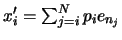, 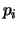 is the 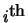 component of the principal vector, corresponding to 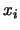, the original data; I.e., the square distance to the space spanned by eigenvectors.
*/
Test the PCA, bye calculating the sum square of residuals (see method SumOfSquareResiduals), and display the histogram
Calculate the principal components from the original data vector x, and return it in p. It's the users responsibility to make sure that both x and p are of the right size (i.e., memory must be allocated for p).